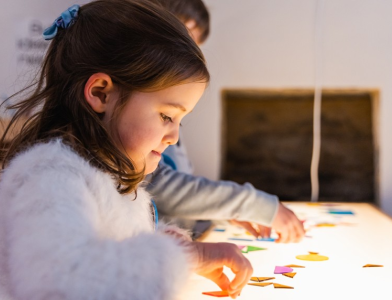

Kom naar het STAM en ontdek 'Het verhaal van Gent', de vaste tentoonstelling. Loop over
de gigantische luchtfoto, zie en voel de stad groeien en veranderen van vorm, ontdek
unieke objecten, ga op in digitale animaties en verdwaal in muurbrede kaarten.
De Poorten - Op ‘t randje van de stad
29.11.2024 31.08.2025
Eeuwenlang kwam je de stad binnen via gigantische poorten. Vandaag vind je precies op die
plaatsen dynamische en kleurrijke stadswijken.
Wat gebeurde hier de afgelopen twee eeuwen? Hoe werd de stad hier gevormd en hertekend?
De meest besproken delen van de stad nemen in deze expo zelf het woord. Op 't randje van
de stad, maar centraal in deze expo.
Uitgelicht
Avondrondleiding 'Honger naar Gent'
Leer 'Het verhaal van Gent' kennen vanuit het perspectief van spijs en drank. Want
niks brengt ons dichter bij de Gentenaren die hier ooit leefden, werkten, aten en
dronken. En dat op Late Donderdag in november!
Kunstendag voor Kinderen: STAMstudio 'Mijn straf stuk'
Kom op Kunstendag voor Kinderen dit jaar langs in het STAM en ga de creatieve toer op
in onze STAMstudio. Tijdens de workshop 'Mijn straf stuk' voor kinderen tussen 9 en
12 jaar tank je inspiratie in het museum en steek je de handen uit de mouwen.

Open familieatelier: Wat als ...
permanent
Doe je ‘Het verhaal van Gent’, dan kom je ook een gezellig familieatelier tegen
vol met bouwelementen. Wat als ... jij de stad mag vormgeven? Hoe zou die er dan
uitzien? Aan de slag!
Luisterspel 'Santé m'n Ratje'
permanent
Ontdek alle bochtjes en gaatjes van 'Het verhaal van Gent' met het luisterspel
'Santé m'n Ratje'. Luister en speel samen met Ratje in het STAM, ideaal voor
kinderen van 4 t.e.m. 9 jaar.
Wie bewaart, die blijft! Koru ve yaşat!
permanent
Doe je ‘Het verhaal van Gent’, dan kom je ook een gezellig familieatelier tegen vol met
bouwelementen. Wat als ... jij de stad mag vormgeven? Hoe zou die er dan uitzien? Aan de slag!.
Kinderspoor door 'Het verhaal van Gent'
21.04.2024 30.12.2024
Zestig jaar geleden kwam de Turkse migratie naar Gent op gang. Vandaag heeft bijna een tiende van de
Gentenaren Turkse roots. Jongeren uit de Turkse diaspora gingen op zoek naar de verhalen, voorwerpen
en betekenissen achter die cijfers. 'Wie bewaart, die vindt! Koru ve yașat!', een sneak peek van een
groeiende Gents-Turkse erfgoedcollectie.
STAMplein: De vierkante kilometer - Dampoort
03.05.2024 03.03.2025
Het STAMplein is een gratis stukje museum met een wisselende programmatie. Ontdek er de schatten van
de vijfde aflevering van het erfgoedproject 'De vierkante kilometer' waarbij Dampoort uitgelicht
wordt.